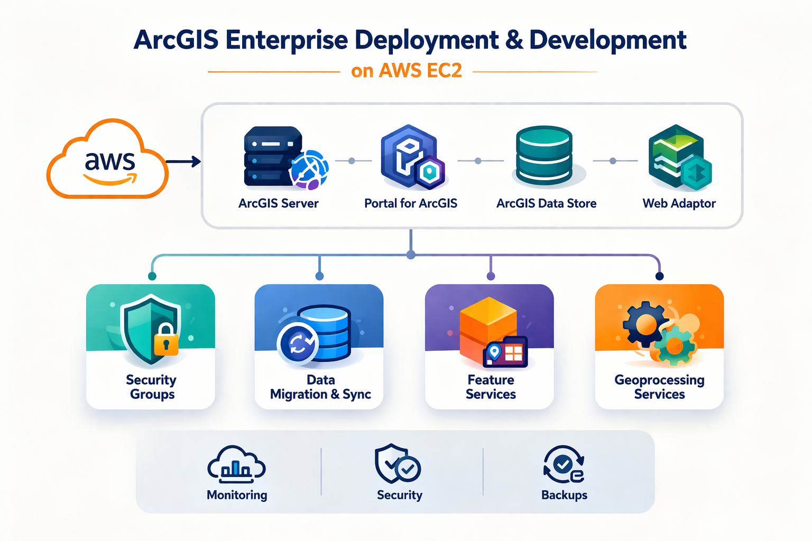

This project involved deploying a complete ArcGIS Enterprise architecture on AWS EC2 infrastructure. The deployment included ArcGIS Server, Portal for ArcGIS, ArcGIS Data Store, and Web Adaptors.

Established a robust, scalable backend that supports thousands of daily maps requests and deep spatial analytics across the organization, improving data governance and minimizing downtime.